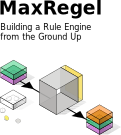
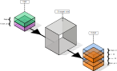
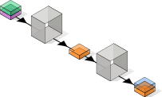
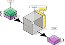
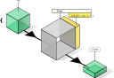
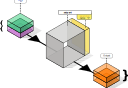
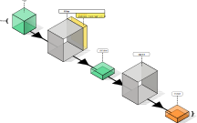
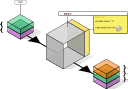

Introduction
This document serves as an introduction to the concepts, design and implementation of our rule system, named MaxRegel.
A rule engine is a software system that makes decisions based on a set of rules. Instead of writing a lot of complex code, you list the rules, and the engine figures out what to do based on the facts it knows.
A rule engine helps organizations make decisions automatically and consistently. Instead of relying on people to remember and apply many rules by hand, the engine checks information against clear “if this, then that” instructions. This means decisions can be made faster, with fewer mistakes, and in the same way every time. Another benefit is flexibility: rules can be updated or added without changing the whole system, making it easier to adapt when policies, regulations, or business needs change. Overall, a rule engine saves time, reduces errors, and ensures that important decisions follow the right guidelines.
Rule engines are a great place for multidisciplinary teams, connecting coders and policymakers. By translating a policy to formal rules, you can validate if an automated process is matching the intended goal. That makes rule engines a communication medium for different roles in an organization.
This document is structured as follows:
- Background: covering general information about rule systems.
- Design: what goals, non-goals, insight make up the wishlist of our system.
- Modelling: structuring the data we need to process, and the processing itself.
Then some implementation notes and further concerns are covered.
The design is presented in a bottom-up fashion. First principles are established on which we can build up more and more functionality. At the risk of being more tedious, it exposes the way of thinking that went into creating the system.
In a way it also tries to promote an axiomatic, bottom-up, way of approaching such a system. It shows paying attention to detail early on, making strict choices, saves work later on, and keeping the rigor.
Audience
A demonstration to designing a formal reasoning system and a way to implement it in software.
This is of interest to anyone that deals with, or creates policies. What makes a good policy? Can we design it in such a way it can be easily executed by computers?
The actual implementation in software is not covered in depth, so you don’t have to be a programmer.
tip
Note there is an appendix covering some technical terminology at the end.
tip
Sometimes you may encounter so-called JSON to express data (e.g. {"name": "John", "age": 35}). In case you are not familiar with this notation, we’ll trust you imagination will get across the main idea. Otherwise, it is briefly discussed in an appendix to help that imagination.
Background
Here we take a closer look into rule engines, or inference systems, in general. By taking a step back and become more a bit more philosophical, the choices we can make when implementing such a system become more apparent. That can then feed into the design decisions later on.
Rule engines
A rule engine is a software system that makes decisions based on a set of “if-this-then-that” rules. Instead of writing a lot of complex code, you just list out the rules, and the engine figures out what to do based on the facts it knows.
Example: Personal Discount Ticket
- Rule: If a person is a member and the total is over $100, give 10% off.
The engine checks if both conditions are true, and if so, applies the discount.
Example: Family Discount Ticket
- Rule: If the group consists of more than 2 members, all persons younger than 12 years get 50% off.
The engine checks the group of people, finds the kids if there are any, and and if so, applies the discount.
Example: Combined Discount
- Rule: If there is Family Discount use that, otherwise consider the personal discount. If both don’t hold, give 5% discount on week days.
This rule combines the previous rules into one, and adds another case as backup.
So, why use a Rule Engine?
-
Easier to change rules without touching the main code.
-
Great for systems with lots of conditions, like fraud detection, insurance claims, or benefit systems.
In short, a rule engine helps automate decisions by separating logic (rules) from code. This benefits flexibility, clarity and correctness. Sometimes the term business rules is used, to emphasize the rules are about higher level domain knowledge, as opposed to some operational details in the operation of the software.
Automation strategies
If we understand a problem so well, that we can even explain it to a computer, than we are on the right track. It means the domain knowledge, the data and rules, are formalized and can be handled by software for automatically determining the consequences.
A simple inference engine cycles through all rules, and execute them as they come along. The execution of the rules will often result in new facts or goals being added to the knowledge base, which will trigger the cycle to repeat. This cycle continues until no new facts emerge.
In case of the Combined Discount example, the first part checks the Family discount rule. That one in turn needs to check the group size first. It may emit the group size as a new fact: count: 4. It may then add a new fact kids_count: 2. Both of those new facts can yield yet another new fact: apply_family_discount: true. Adding more and more small facts can lead to higher level facts.
This approach of (blindly) generating all the possible facts from given input facts is called forward chaining. By creating new facts from initial facts, and chain those in turn for yet another round of new facts, etcetera, all new facts show up at some point. Clearly, some facts will never emerge if the input conditions are not met.
Another approach, backward chaining, looks at the facts you would like to proof first, checks what rules need to be satisfied with all currently known facts. Otherwise, it tries to find rules to satisfy those facts in turn first, and so on. From the goal, you “chain the rules backward” all the way and see if the required input facts are there.
Both approaches have their pros and cons.
| Feature | Forward Chaining | Backward Chaining |
|---|---|---|
| Direction | Facts → Conclusions | Goal → Needed facts |
| Best for | Real-time updates, inference | Answering specific queries |
| Think like | Detecting all what can happen | Finding out how to reach a goal |
| Example | The system starts with what it already knows about a person, then applies rules step by step to see what conclusions it can reach. | The system starts with a question, for example, “Does this person get a discount?”, and then works backwards to check what facts or conditions would need to be true. |
Our system uses forward chaining, the more data-driven approach. It’s strong points are:
-
When you start with known facts and want to discover all possible conclusions. This is convenient when, at different stages, intermediate conclusions are relevant for other parts of an organization, without enumerating all possible relevant facts for external or future systems.
-
When new data is constantly coming in, and you want the system to react to it automatically.
It comes at the price of being more wasteful: many facts may be generated that are irrelevant for some application. You are generating more data than needed. Computers are fast, so it does not have to be a real problem in that sense, but it goes against our data minimalization design goal described in the next chapter. Luckily, there exist ways to limit the data being generated by prioritizing rules.
Modelling
Next we’ll see how such a system can be put together, by exploring modelling a bit further.
Modeling, in simple terms, means creating a simplified, structured representation of something from the real world—like a map for a city, but for ideas, systems, or processes. Instead of working with the messy, complicated real thing, you make a formal version that captures the important parts so you can understand, analyze, or predict.
In case of a rule engine, writing down rules and facts in a structured way is a model of decision-making.
The benefits of having a model are:
-
Communication: It forces you to think clearly and remove ambiguity. Everyone can follow the same formal representation. A model is a common language for different stakeholders (business, developers, scientists).
-
Exploration: You can analyse “What if?” scenarios safely—without breaking the real system.
-
Automation: Computers can work with a formal model to simulate, optimize, or make decisions. Also mistakes can be spotted early on. When systems grow, a well-made model makes it easier to maintain and extend.
How much detail of the real world do you want to include, when designing a model? Often there is a tradeoff between:
- Simplicity: The simpler, the easier it is to comprehend. But if it is too simple, you won’t be able to spell out the things you want.
- Expressiveness: The more details, the more realistic and general purpose the model is. But if it is too generic you can possibly express much more than needed, things that may not have a relation with the reality anymore. Or it carries over too much complexity to be of help in the first place.
note
The term “modelling” is used for many different things. Here we use it exclusively for the “reasoning with data and rules” part. Other interesting things, like how this would fit in some IT landscape (i.e. “domain architecture modelling”) concerning other systems, access management, auditing for example, are out of scope.
Design
Here we lay out the key drivers to embark on the creation of a new rule engine. By identifying design issues and choices before diving in into the weeds of the system’s building blocks, the “why” should be more clear. Next we will look at goals, non-goals and consider some cross-cutting concerns.
A generic rule engine can take many shapes and forms. Here we try to identify the elements that are dear to us, placing the MaxRegel rule engine in the broader space of related systems.
Goals
When choosing or building a rule engine, organizations care about more than just “does it work?” They need systems that are trustworthy, adaptable, and sustainable. The design goals of this engine focus on exactly those concerns: transparency ensures decisions can be explained to users and auditors; correctness builds confidence that outcomes are reliable; scalability makes the system practical for real-world volumes of data and rules; expressiveness allows complex business logic to be modeled without friction; maintainability keeps long-term costs low and avoids dependency risks; minimalization prevents bloat and confusion; extensibility makes the system future-proof and integrable with other tools; rule/data minimalization avoids retrieving more data than needed to get answers; and layered rule definition offers flexibility for both technical and non-technical teams. Together, these principles align the engine with the priorities of organizations that value clarity, performance, and long-term resilience.
We will look at those goals in more detail:
Transparency
The engine should make its reasoning visible. Users should be able to see why a decision was made.
This means full traceability: a clear record of which rules fired, in what order, and which facts were used to reach a conclusion.
Not all users need the same level of transparency. A customer getting a discount may be happy enough with “seasonal discount”, where a customer support “user” of the rule engine would like to see more details of why this customer was or was not eligible in order to resolve disputes. A marketing team would like to make clear what customer journeys lead to what discounts for improved targeting.
Correctness
The engine should be trustworthy. Rules should work as expected and give predictable results.
Achieved by breaking logic into small, testable building blocks. Each part can be proven correct individually, reducing errors in the larger system. Smaller blocks can be more easily understood and checked if they encode the desired behavior. It is a “divide and conquer” approach to correctness.
Scalability
The engine should handle large workloads without slowing down. It should work quickly even with many rules and lots of data.
- Performance: Complex rule sets should process thousands of cases per second, enabling use cases like running simulations during policy design.
- Connectivity: Can pull in data from external sources (databases, REST APIs, etc.) as part of its reasoning.
Expressiveness
The engine should let you describe logic in powerful ways.
- Tools to work with facts: You can transform, filter, and combine data however you need to create new insights (fact sets) in order to capture the logic you want.
- Declarative style: The order of rules and facts doesn’t matter, making it easier to compose small pieces into larger systems. For example, “people under 12 are young” and “young people get a discount”, leads to the same conclusions if the order of those rules is changed: “young people get a discount” and “people under 12 are young”. That is quite obvious here, but in larger systems this makes it easier to read rules by themselves, instead of knowing the order of their contextual rules.
Maintainability
The system should be easy to understand, change, and extend over time. Built simply, without unnecessary complexity.
- From the ground up: pure operations, minimal moving parts. For organizations this is a way to keep long-term costs low.
- No external dependencies: avoids breaking changes from outside libraries and avoids bloat from unused features. It also is a safety when a software vendor runs out of business; rule engines quickly become core to an organization and external risks should be minimized.
Rule/Data Minimalization
The engine should keep rules and data as simple and focused as possible. Avoid processing data that may not be needed for improved privacy.
For example, when we can already see a customer is a member, and therefore will receive a discount, another rule checking the same discount based on a more privacy-sensitive age data can be omitted.
Also, the data needed for performing the logic of a rule, should not have to be copied over to the rule engine. The rule engine would just connect to a part of an external database, making privacy (GDPR) compliance easier.
Lean models and concise rules reduce maintenance and improve clarity. When an (intermediate) conclusion can already be made, there is no need to collect more (unnecessary) data.
Extensibility
The engine should support new ideas and integrations without major rewrites. Eventhough you never know what the future you bring, allowing adaptability makes a rule engine more sustainable. One can add new functionality and connect to other systems with ease.
Forward chaining generates all possible new facts, not just those needed for one outcome. These facts can be shared with other systems (e.g., via message queues) at any stage of processing.
In our discount example, when determining the number of kids in a family, this is done for determining the discount. But that number may itself be fed into a fraud detection system. E.g. “more than 100 children in one family generates an alert of possible fraud”. Or, for people receiving a discount, send some happy email to offer them next month another benefit.
Another way to look at extensibility is to ensure no proprietary software is needed to edit rules. Complicated and closed formats for storing rules may one day be a liability: what if the software company ceases to support the required software? An open (text-based) format for rules leaves the door open to create an alternative way of reusing those rules previously defined.
Some goals can easily be married using the right implementation strategy. For example, an external-dependency-free approach, is part of simplicity, which aids transparency and correctness. But our need for expressiveness can clearly compete with other goals.
Also note that our choice of “forward chaining” inference engine possibly uses and creates more data than strictly needed for an application. Our goal of data minimization contradicts the forward chaining approach[^note-dm].
[^note-dm] In the “Scripting” chapter you’ll learn that rules can be cut short (or prioritized) by using return_if rules to support a level of data minimization.
All in all, designing this system is therefore a balancing act.
Non-goals
Overly generic. It is not a replacement for a full-fledged logical programming language, such as Prolog. General programming languages allow you to build anything, from rule engines to games. It comes at the price complexity with little aid to spell out you specific business logic.
Extremely high speed eveluation of rules. No compilation to bare metal machine code. Readability and correctness in favor of raw speed.
warning
wie kan beleid schrijven en vertaling naar code process makkelijk. niet per se code zo makkelijk dat iedereen het meteen gebruikt voor beleid maken. geen realistisch scenario.
A end-user friendly rule editing as main goal. The idea that domain experts use a high-level domain specific language and/or editor is attractive. It empowers smart people to implement changes in a policy themselves. When strongly believe in supporting such a way of working, though making that leading from the start may become a red herring in finding a solid base. We expect rules should be shared in a machine readable format too, for example. We have faith our axiomatic way of building higher level building blocks, bit by bit, will (among other things) also allow for high level rule representation that suits domain experts.
It also leaves out typing of fields in domain objects. It can be very useful to spell out in great detail that the “price” information of an item costs is not simply “1.95”, but that the precision is two digits, the currency is Euro and that is should be formatted as “€ 1,95”. It is a complementary effort that MaxRegel can be extended with if required.
Cross-cutting concerns
Things that are not goals themselves, but are expected to be important for a successful solution are described here.
Simplicity
Keeping the system simple is… not so simple, given our goals. If we keep it as simple as possible it is more likely to be future-proof.
Simplicity can show at different levels:
- Ensuring a small code base for the rule engine.
- No fancy language features. Rather implement the rule engine with a few more lines of code, than cryptic/smart one-liners.
- No or limit external dependencies.
Multiple Abstraction Levels for Writing Rules
We know simplicity and expressiveness are at fundamental odds with one another for many domains. A very complicated rule in real life would require the rule engine to have advanced and complicated features to capture the logic accurately. But complicated features make it error-prone, and limit maintainability and transparency.
Therefore, a goal is to support multiple ways of writing rules, using at different levels of abstraction. That allows you to use a clearer rule, say 90% of the time. But there is an escape hatch for the other complicated 10%. Those rule can then be coded in a less user-friendly way, but gets the job done. It allows one to write rules in a way that fits your needs.
| Level | Expressiveness | simplicity | Write a rule… |
|---|---|---|---|
| raw programming language | \( \star \star \star \star \) | \( \star \) | in a full fletched programming language with all possibilities and pitfalls. |
| combinator library | \( \star \star \star \) | \( \star \star \) | using reusable function of the inference engine in code. |
| fluent API | \( \star \star \) | \( \star \star \star \) | like an embedded Domain Specific Language (DSL) within code. |
| rule scripting language | \( \star \star \) | \( \star \star \star \star \) | in the most human readable, yet formal, way possible as external scripts, not requiring the hosting programming language the rule engine is written in. |
A special mention is a rule exchange format, in a way that external DSL editors (such as Jetbrains Meta Programming System, MPS). This is out of scope for this document, but would likely tap into the combinator library level.
Facts
Let’s define the data structure for storing facts. Facts are the basic building block for storing data. If we make sure that input, intermediate and output data is always structured the same, it facilitates creating processing pipeline that click together easily.
We’ll split storing data for facts into two parts:
- The term, which is the “meat” of the data.
- The info, which is the metadata
Next, those parts are explained further.
Term: core information
When dealing with rules, we want our data to be chunked in meaningful objects, containing the information you actually care about.
For example, we want to define a person that consists of a name and an age.
In our terminology, we’ll say that the term person has two fields. A field has a key (the name of the variable) and an actual value. In JSON notation, this looks as follows:
person = {
"name": "Bart",
"age": 10
}
An address can be another term, with fields street, house_number, city etc.
Those simple objects are commonly referred to domain objects, model objects, (named) tuples or terms. We use the latter, “Term”, to denote a defined part from the domain of discourse.
The keys of a term, could in theory be anything, but for mental comfort we’ll limit them to lower cased names, possibly separated by an underscore ( _ ).
note
Note that we don’t assume any validity checking on fields at this stage, such (dis)allowing missing data, or formats in which dates should be written. Later on, you can use rules to check if terms are valid.
Info: Meta data
The meta data, or simply called info here, is in a way of secondary importance.
The actual data is the term, but for example:
- the source of a term (is this
persondata coming from social media, an address book, a government API?) - the date this data was created
- what previous rules provided this data, for tracing back how this person is processed in the rule engine.
The latter shows how info can be used by the rule engine for certain bookkeeping.
Like terms, info is organized in key-value pairs.
Facts: Terms with meta data
Facts will form the unit of individual data points, for the remaining discussion of the system, since it is the combination of “normal” data (the term) and meta data (the info), and therefore contains all we need.

Fact sets
In our rule engine, you would think we make facts the core unit to reason about. After all, it contains all data (and metadata) you want to consider when inferring more facts.
MaxRegel makes fact sets the central data element of computation. A fact set is a collection of facts and can contain any number of elements. Sets can be empty, have a single fact, … a million.
A fact set can be visualized as a box containing the facts.
This adds extra expressivity to the things we can later ask about data, making it possible to write more complex logic in our rule system.
Not only can we ask: “Is this person older than 12 years old”, considering just a single fact, but also: “How many people older that 12 are in this group of people”, considering a (sub)groups of facts.
Without support for fact sets, this last example would rely on some predefined, hard coded rule to extract those people. This logic would then reside outside the rule system, making it inflexible. Another take could add a field lives_at_address_and_is_older_than_35 for each individual, making it an intrinsic property. That feels also very arbitrary and is equally inflexible.
Parts: Organizing fact sets
So went from facts to fact sets as data unit for rules to process. We’ll add another feature to those fact sets: a way to organize parts in a factset.
A part in a factset is essentially a subset, i.e. a section of facts that belong together under a label (the part name). For example, a factset may contain persons, locations, vehicles, … Think of them as lists of facts that can be easily selected.
We now visualize single factset as a stack of boxes. Those boxes with different colors are the parts. The individual facts (spheres) are not drawn anymore: the boxes still contain any number of facts, though.
Later on, when we introduced different tools to filter or join fact sets, we can use parts to add new subsets under different labels.
Note that parts are the names that exist in the fact set, but that this name is not a part of the Fact’s term or info. In that sense, it is just an additional label.
Unified data: one format to rule them all
The possibility to have parts in a factset is a nice addition, but it is not an optional one. The structure of terms, wrapped in facts, wrapped in factsets with parts is a mandatory way of working. And that may seem superfluous for simple cases.
What if you want to make a simple fact, indicating a user is admitted to some program, according to law? The corresponding rule would have to return true or false, right?
{ "admitted": true}
This is JSON[^jsonnote] way of formatting the data structure of a term with the result.
But remember that a term is wrapped together with metadata, called info into a fact object.
[^jsonnote] Remember there is an appendix explaining JSON notation.
{ // a fact
"term": {
"admitted": true // the thing we actually try to say
},
"info": { // some meta data
"source": "law"
}
}
But then again, we’re trying to make the point that we always want to think in fact sets: a list ([...]) of zero or more facts, under a part name. So, we end up with the following structure as our result:
{
// the factset
"result": [ // all facts for the part called "result"
{ // a fact
"term": {
"admitted": true // the thing we actually try to say
},
"info": { // some meta data
"source": "law"
}
]
}
As you can see here the actual value is wrapped in a term, that is wrapped in a fact, that is contained in a fact set with part name “result”. That is a lot of wrapping, but it is the only data structure you’ll ever have to deal with. No other datastructures, such as lists/arrays, maps/dictionaries, tuples, you name it, are used on the level of the rule engine. And that makes clicking them together, staying in the same “realm of thought”, much easier.
warning
From here it become a bit formal (read: dry)… Skip to the next chapter if you want.
Basic operations: what fact sets can do
Without having defined yet how we can create rules on our fact sets yet, we can define some useful functions for fact sets. Those will be the basic functionality we can rely on when building larger chunks of logic.
Operations on fact sets:
warning
[] -> list of …
| function name | argument | returns | description |
|---|---|---|---|
fs_create | facts | factset | create a new factset from the facts provided (as list, iterator, …) |
fs_iterate | - | list of facts | retrieve all fact objects contained |
fs_count | - | integer | retrieve the number of facts contained |
fs_filter | predicate | factset | retrieve only the facts that pass a given predicate/test |
fs_part_names | - | list of strings | retrieve all available part names this factset contains |
fs_get_part | part name | factset | retrieve only the facts from a given part name |
fs_set_part | part name | factset | all facts now belong to a given part |
fs_remove_part | part name | factset | a factset containing all parts, but the one provided |
Implementation a-specific
The operations just specified in fact define what a factset is: something that supports “getting a part”, “filtering out facts”, or “determining the number of facts in it” makes up a fact set.
When we start programming this system, you can go about it in different ways. Should the fact objects be in a list data structure, or in some map/dict? Maybe the facts already exist as rows in a database. Can we leave them there, and create a fact set wrapper that translates the basic operations into SQL? What is there is an online API, can we handle that as a fact set?
It turns out that we can combine different implementations of a factset, all with their own strengths: this one is fast for small sets, this one is good for giant datasets, and another one can work with on-demand data retrieval… But those nitty-gritty details don’t matter when we want to think about the data in higher level terms. We can use a database in the same way as some simple facts coded directly in the system. Those fact sets can be used interchangeably, without having to know how it works under the hood, but forming a single factset to reason with.
Concatenating Factset
In many occasions, we would want to merge fact sets into a single factset. A factset with children and another with parents can make up a “family” factset for example. One could iterate over the two fact sets individually and create a new one. All the underlying facts are then copied into a new data structure. Since we foresee merging two fact sets will happen often, this may become too resource intensive to make it fast. A dedicated fact set implementation can be created, a concatenated factset, that does this in an efficient way. Instead of copying over all facts, it stores two references to the initial (and remember: immutable!) fact sets. When it is asked to determine its count, it will ask the underlying fact sets to give their count and add them up. The same for iteration and filtering facts. This concatenated fact set is said to be a lazy implementation, as it postpones the actual work until the last moment that it is requested.
So, even though this could be implemented more directly, this special case is partly the success to a fast inference engine. And the good thing is: you can almost forget about it again, since it is just another fact set.
Some last notes
When designing this data structure, you have to make choices of what is and what is not allowed for a factset. For our system the choice was made for a factset to allow:
- duplicate facts: you can add, say, a person fact twice.
- heterogeneous sets: you can add a fact about a person and a fact of a car (different types) to the same fact set (and part).
It gives the system more expressiveness.
Rules
Rules are the tools for deriving new facts from given facts. Those new facts encode the decisions we are interested in.
This is an example from before:
- Rule: If the group consists of more than 2 members, all persons younger than 12 years get 50% off.
Based on the facts: group of people and the price of a ticket, we can derive multiple new facts, such as group size, number of people < 12, number of people >= 12, and eventually total price.

Pure operations
In addition to the operator format, we will also make them pure function.
Pure functions always return the same result for the same inputs, with no side effects. This means the evaluation of a rule is deterministic, making the system predictable. Predictability simplifies debugging and reasoning about the behavior of rules.
Immutable inputs
Rules never change fact sets. Fact sets are so-called immutable: you can’t change its content. You can create new (immutable) fact sets, though. So instead of adding a fact to a factset, you create a new factset from the original facts and the one you want to add.
This may seem like a simple choice of words, but it guarantees that when you apply a series of operations (an algorithm) the original data is still intact. This is also called pure data processing.
It also handles external data sources, which you may read, but not change in a natural way. You may not be the owner of an external database that is used, but you can make selections, add fields etcetera to newly derived facts. Later on in the process, we can refer back to some initial factset, and know it is still the same even though it may have past several operations.
Sometimes this “pure” approach is also challenging. If we want to rename a collection, or add some additional field, do we also need to copy over all its facts? That seems wasteful. Luckily by implementing this in a smart way, those operations stay efficient, without giving up the guarantees that purity brings. In the chapter “Implementation Details” this is covered in more detail.
Traceability
When modelling what a rule should be and how it should behave, we can take that opportunity to bolt on additional functionality. When a rule is triggered, we’ll make sure the resulting facts contain a reference to that rule. When the rule engine finishes at some point, the results contain a “bibliography” of rules that aided in the construction of a fact. That helps to audit, finding out why a certain result came to be, easier.
Metadata for rules
Just like facts, rules have metadata too. This information is also a set of arbitrary key-value pairs, for example “source: law 1.2” or “type: fraud detection”. Together with tracing as described before, this allows to know even more about the facts that come out of the inference process.
Annotating data with meta data is an extra insurance for maintainability and extensibility, i.e. future-proof. It means data and code can be identified later on, and adapted where needed.
Designing the right metadata is important. What information to take into account? Names, urls, version labels, sources? This is a good moment for a multidisciplinary team to come together: what data is needed to make effective tracing possible? Is there enough information to provide relevant support?
Composability: Rules as operators
A rule is a function that takes an input fact set, and creates a new output fact set. That makes them unary operators in the mathematical sense: functions that take an argument of some type and return something of the same type. Since the input is the same form and shape as the output, this makes clicking them together easy. This makes it easier to build complex rules from smaller, simpler operators without unexpected interactions.

“It is better to have 100 functions operate on one data structure than to have 10 functions operate on 10 data structures.”
– Alan Perlis’ Epigrams on Programming (1982).
Those 100 functions on your one data structure can be composed together in lots of unique ways, since they all operate on the same data structure, but you can’t really mix the 10 functions on 10 data structures as well, since they were defined only to work on their particular data structure.
When you have multiple data structures, the knowledge of how these data structures are glued together with each other ends up being in functions, hence, writing functions gets harder because you will have to repeat that knowledge again and again.
Whereas if you have just one data structure, this knowledge lies inside that data structure itself, hence, freeing functions of this knowledge.
Breaking down rules
We can create a rule that does many things at the same time. For example a function with the parameters color = yellow, shape != round, determines the total price for each banana in a (fact)set of available fruits.
But we may already have trouble with one of our design goals: traceability. If a fruit is not yellow or round enough for a banana, it is harder to automatically track which of those demands was not met. The same holds for the total price of those fruits: does it make sense for the number of items that met the criteria?
This is why we promote breaking down rules in reusable, simpler rules. Those can we individually checked for correctness and allows for running an audit log on those components.
Supporting our goals
Making rules pure mathematical operators, with tracing capability helps to achieve some of our set design goals.
- Correctness: Pure functions make them deterministic and predictable. It also simplifies testing; you only need to test the function in isolation. Mathematical purity aligns with formal logic and algebraic laws (e.g., associativity, commutativity, distributivity where applicable). This enables formal reasoning, correctness proofs, and possibly static analysis of rules.
- Scalability: When operators are pure, you can replace an expression with its value without changing system behavior (known as referential transparency). This property is crucial for optimization, caching, and memoization. Since pure operators have no side effects, their evaluations can be run in parallel without risk of race conditions. This can greatly improve performance in large rule sets.
- Maintainable: Composability leads to cleaner, more modular rule systems. Pure functions are self-contained; they don’t depend on external state or mutate anything.
note
look back at design goals for examples.
Rules can be…
Rules are strict in the sense that the input and output is always a factset. But they are still very versatile, as the following examples show.
- Reorganize facts in parts
- Return the input as part of the output fact set, so data is added, not replaced.
- Ignore any input and just return some new fact set.
- Generate facts that indicate some action (e.g. send e-mail, or generate warning)
- Use metadata. Remember that facts contain the main data (term) but also the metadata (info). Both parts are available when creating a rule. That means metadata can be part of the logic to create a result, making rules expressive. E.g. a rule that filters people based on age (in term) and on source (in info).
- They can take parameters to do their job. Parameters are not part of the normal input argument (a factset), but rather means to specify a rule further. Take a filter rule for example. It could filter facts on a certain field, say “age > 18”. This is then a parameter that is set up once, and can then be applied any number of times to different inputs.
- Rules can use parameters to retrieve data from external sources. When such a rule gets a customer id, it can retrieve relevant data by a REST API, and format the resulting data as a factset.
Scripting
We now have rules and fact sets (that rules always operate on) defined. Next, we’ll define some basic rules, that are simple in itself, but prove to be a useful toolbox to create higher level rules.
Those higher level rules are closer to the domain we want to model, and are therefore more interesting ultimately.
We’ll work up rules to become a programming language in itself. Not one that let’s you create games, but one dedicated to create logical systems.
warning
This chapter is about making basic things available for creating rules in a sensible way. This may be boring if you don’t feel too puristic about this endeavor. If you already believe that simple things such as “selecting facts based on some property”, or “counting them” and assigning them to some variable will be possible with factsets and the outlines for rules, you can make an evasive maneuver here, and skip boring/founding definitions. After all: n = getpart("persons"); filter(age > 18); count clearly means the number of persons older than 18, stored in a factset named “n”, right?
Basic rules
Remember that we defined fact sets to have certain functionality baked in. Independent of whatever rules we are going to create, fact sets can do certain things themselves.
| function name | argument | returns | description |
|---|---|---|---|
fs_create | facts | factset | create a new factset from the facts provided (as list, iterator, …) |
fs_iterate | - | list of facts | retrieve all fact objects contained |
fs_count | - | integer | retrieve the number of facts contained |
fs_filter | predicate | factset | retrieve only the facts that pass a given predicate/test |
fs_part_names | - | list of string | retrieve all available part names this factset contains |
fs_get_part | part name | factset | retrieve only the facts from a given part name |
fs_set_part | part name | factset | all facts now belong to a given part |
fs_remove_part | part name | factset | a factset containing all parts, but the one provided |
But those functions are not what a user of our rule engine will (often) use directly, though. Rules, as discussed before, are what a user applies to define some logic.
Some of those fact set functions are wrapped in rules, so they are accessible and can be reused easily.
| rule name | argument | parameter | returns | description |
|---|---|---|---|---|
count | factset | - | factset | fact set with single fact, with term n = … |
filter | factset | predicate | factset | a subset of facts that obey the predicate |
get_part | factset | part name | factset | a factset with just the given part |
set_part | factset | part name | factset | a factset with all facts from all parts under a new name |
remove_part | factset | part name | factset | a factset containing all parts, but the one provided |
Note that:
- the rule name is not prefixed with
fs_(to denote the fact set variant). - those rules internally use the fact set functions
- the argument is always a factset
- the result is always a factset
- a fixed parameter can be used (the predicate function, or part name) to instantiate the rule.
Count rule
Determine the number of facts in the provided factset (independent of what part they belong to).

Filter rule
Select just the facts that hold up to some test. This test (i.e. a predicate) looks at a certain field in the term of a fact (e.g. “age”) and compares that to constant.

Get part rule
Separate out all facts under a certain label, i.e. the part name.
Remove part rule
Separate out all facts that are not under a certain label, i.e. the part name.

Set part rule
Assign a new part name to all the facts in the factset.

First examples with rules
At this point we can already create some meaningful rules, given the basic ones we just introduced.
Consider the following factset that contains a part persons: \(FS_{persons}\). We just show the terms as rows (not the metadata of the fact).
| name | hair | weight | age | gender |
|---|---|---|---|---|
| Homer | short | 250 | 36 | male |
| Marge | long | 150 | 35 | female |
| Bart | short | 90 | 10 | male |
| Lisa | middle | 78 | 8 | female |
| Maggie | middle | 20 | 1 | female |
| Abe | short | 170 | 70 | male |
| Selma | long | 160 | 41 | female |
| Otto | long | 180 | 38 | male |
| Krusty | middle | 200 | 45 | male |
This determines the number of people:
\[ \texttt{count}(FS_{persons}) \]
Resulting in:
| n |
|---|
| 9 |
This selects the children:
\[ \texttt{filter}_{age \leq 12 }(FS_{persons}) \]
| name | hair | weight | age | gender |
|---|---|---|---|---|
| Bart | short | 90 | 10 | male |
| Lisa | middle | 78 | 8 | female |
| Maggie | middle | 20 | 1 | female |
And this the number of children, specifically taken from a part:
\[ \texttt{count} (\texttt{filter}_{age \leq 12 }(\texttt{getpart}_{persons}(FS_{persons}))) \]
| n |
|---|
| 3 |
Compose using Then
The last example shows we have to \( nest(every(functioncall(FS)))) \). Function composition is more convenient to click together two rules, and make it a new rule object (instead of the resulting value).
\[ \texttt{count} \circ \texttt{filter}_{age \leq 12} \]

Here, \( \circ \), is the usual mathematical way to denote function (rule) composition. It performs the right-most function first, then the one on the left, etc.
In programming, we would often like to think in data flows. First do this, then that, followed by that, etc. It is the same as function composition, but then works in the opposite direction. We will use the symbol then.
\[ \texttt{filter}_{age \leq 12} ~ \texttt{then} ~ \texttt{count} \]

Saying: filter them out by age, then count.
So far we have seen rules that do something on data (factsets). But can create then as a rule in itself.
\[ \texttt{then}_{rule_a, rule_b} = rule_a ~ \texttt{then} ~ rule_b \]
then has two parameters that are rules themselves (e.g. getpart and count). When the then rule is applied, it evaluates the first rule \( rule_a \), and applies the second parameter, \( rule_b \) on that.
And since we will use then a lot, it is better to keep it short. The semicolon, ;, means then as well.
\[ \texttt{filter}_{age \leq 12} ~ \texttt{;} ~ \texttt{count} \]
note
It may not sink in directly, but is elegant to learn that composition of rules is a rule itself.
Assigning variables/part names
At this point we have rules, that can be chained together into a single bigger rule. To improve readability (and therefore correctness and maintainability), we would want to give those rules meaningful names. For example:
\[ \texttt{children} = \texttt{getpart}_{persons} ~ \texttt{then} ~ \texttt{filter}_{age \leq 12} ~ \texttt{then} ~ \texttt{count} \]
It turns out we can implement this assignment as a rule itself. When applied to a factset, \( FS \):
- It removes the part with the variable name (the left-hand-side). Maybe there was no such part, in which case it is unchanged. This reduced factset is now called \( FS’ \).
- It evaluates the right-hand-side, which is a (possibly composed) rule, that create a new factset.
- That factset will get the variable name as part name, \(FS_{var}\).
- The result is \( FS’ \) concatenated with \(FS_{var}\)1.
As you can see here, it is build up from basic rules we already know.

And this is a more compact way to visualize the assign rule:

note
The same as for then rules… funny that you can create new variables entirely from the definition of rules and factsets, right? At least from a programming laguage perspective, that is.
Celebrating axiomatic thinking
When we first discussed facts, factsets and rules, it probably seemed a bit boring. But here we are: we have built a logical programming language,from those ingredients and nothing more.
The fact that we can just keep transforming factsets with rules, and get additional high level features like assigning intermediate variables and chaining rules to keep things organized almost for free, is great.
Extending the toolbox
We have some first rules to recombine parts: getpart, removepart, concatenate, that allow us to recombine fact sets by things from here and add them there, all with a single factset argument and result. There are many useful transformations thinkable, that may come in handy when defining higher level rules.
Aggregations
An aggregate rule is a function where multiple values are processed together to form a single summary statistic.
Parameters:
- field to group by (e.g. “gender”)
- field for the value to use (e.g. “age”)
- function to reduce the selected value into a single one
Example: \[ \texttt{aggregate}_{gender, age, max} \]
| gender | aggregate_max_age |
|---|---|
| male | 70 |
| female | 41 |
Arithmetic
Apply an arithmetic of two fields of two factset selections.
Parameters:
- the function to apply (e.g. +, -, *, /)
- the rule that selects the first argument (the first field of the first fact’s term is used)
- the rule that selects the second argument (the first field of the first fact’s term is used)
Example:
This factset contains two parts:
- revenue
| r | project |
|---|---|
| 5 | A |
| 4 | B |
| 3 | C |
- expense
| e |
|---|
| 1 |
| 2 |
Then
\[ \texttt{arithmetic}_{-, \texttt{getpart}(“revenue”), \texttt{getpart}(“expense”)} \]
yields:
| x |
|---|
| 4.0 |
| 2.0 |
Const
Some constant value. Always evaluates to the given factset, ignoring its factset input argument. This is a way to convert a factset into a rule.
Example:
If we have a factset with an “expense” part:
| e |
|---|
| 1 |
| 2 |
and want to use arithmetic to add 1, this number is first wrapped in a term ({x: 1}), then in a fact, then into a factset with this fact, and then to a rule that is expected as parameter.
\[ \texttt{arithmetic}_{-, \texttt{getpart}(“revenue”), \texttt{const}(1)} \]
yields:
| x |
|---|
| 2 |
| 3 |
Identity
A rule that does nothing to its input argument and just returns it. This sounds unnecessary, but some other rules may require a rule that creates a selection of some sort. If you want to just want to use all provided facts, identity can be used to achieve that.
If we have a factset with an “expense” part:
| e |
|---|
| 1 |
| 2 |
and want to use arithmetic to add 1, instead of writing
\[ \texttt{arithmetic}_{-, \texttt{getpart}(“revenue”), \texttt{const}(1)} \]
One can as well write:
\[ \texttt{arithmetic}_{-, \texttt{identity}, \texttt{const}(1)} \]
to yield:
| x |
|---|
| 2 |
| 3 |
Join
Join two selections on the given field. It merges two facts into one.
Given this factset that defines titles by gender, \(FS_{titles}\),
| gender | title |
|---|---|
| male | Mr. |
| female | Ms. |
we can augment \(FS_{persons}\) with this extra infomation using:
\[ \texttt{join}_{gender}(FS_{persons}, FS_{titles}) \]
| name | hair | weight | age | gender | title |
|---|---|---|---|---|---|
| Homer | short | 250 | 36 | male | Mr. |
| Marge | long | 150 | 35 | female | Ms. |
| Bart | short | 90 | 10 | male | Mr. |
| Lisa | middle | 78 | 8 | female | Ms. |
| Maggie | middle | 20 | 1 | female | Ms. |
| Abe | short | 170 | 70 | male | Mr. |
| Selma | long | 160 | 41 | female | Ms. |
| Otto | long | 180 | 38 | male | Mr. |
| Krusty | middle | 200 | 45 | male | Mr. |
Select fields
Just pick certain fields (columns) from each fact’s terms.
\[ \texttt{select}_{age, hair}(FS_{persons}) \]
yields:
| age | hair |
|---|---|
| 36 | short |
| 35 | long |
| 10 | short |
| 8 | middle |
| 1 | middle |
| 70 | short |
| 41 | long |
| 38 | long |
| 45 | middle |
Return if
Return if helps handle different cases to determine a returned value.
Say we are in front of a traffic light, then green means ‘go’ and red means “stop”, or “don’t go”.
In our rule engine, we can say there is a traffic light factset:
| light |
|---|
| “red” |
or
| light |
|---|
| “green” |
and we want to derive a new fact set:
| go |
|---|
| false |
or
| go |
|---|
| true |
In most programming languages you can do something like this:
if (light == "green") {
return {"go": True}
}
return {"go": False}
So, if some condition holds, return the corresponding value, else just continue with the next lines. In this case that turns out to be returning another value. Returning is as much delivering the “final value”.
Writing
if *condition* {
return expression
}
in similar function as before, we get:
\[ \texttt{return_if}(condition, rule) \]
Here
- condition is a predicate; a test that takes a factset as an argument and returns
trueorfalse. It is a little expression that says: this property must equal this or that. Or: this must be greater than some value. In our example of persons:age > 18, or so. - expression is some value you want to use later. In this case a go or no go value. As a factset of course, since this is the way we do things.
A rule is often composed: do something then something else then more… With a “return_if” somewhere in this chain, we can decide to stop halfway, if the conditions are right. It lets you define shortcuts in you logic flow.
-
In the chapter about factsets we briefly mentioned the efficient concatenated factset, used here. ↩
Use cases and examples
We’ll look at the earlier examples of business rules to determine discount on tickets and implement them with the tools we have under our belt.
The following factset with part persons: \(FS_{persons}\) is used again.
| name | hair | weight | age | gender | member |
|---|---|---|---|---|---|
| Homer | short | 250 | 36 | male | false |
| Marge | long | 150 | 35 | female | false |
| Bart | short | 90 | 10 | male | false |
| Lisa | middle | 78 | 8 | female | false |
| Maggie | middle | 20 | 1 | female | false |
| Abe | short | 170 | 70 | male | false |
| Selma | long | 160 | 41 | female | true |
| Otto | long | 180 | 38 | male | false |
| Krusty | middle | 200 | 45 | male | true |
warning
TODO
Example: Personal Discount Ticket
- Rule: If a person is a member and the total is over $100, give 10% off.
The engine checks if both conditions are true, and if so, applies the discount.
members = getpart("persons") ; filter (member == true)
discount = returnif( getpart("members"), const({factor: 0.15})) ; const({factor: 0.0})
Example: Family Discount Ticket
- Rule: If the group consists of more than 2 members, all persons younger than 12 years get 50% off.
The engine checks the group of people, finds the kids if there are any, and and if so, applies the discount.
Example: Combined Discount
- Rule: If there is Family Discount use that, otherwise consider the personal discount. If both don’t hold, give 5% discount on week days.
Implementation
Now we have a design, a model for capturing logic with factsets and rules, it can be implemented using any programming language. Up until this point, we did not bother with any code, and we will keep it that way. Still we can make some suggestions for any implementation.
General datastructures vs Classes
The things that contain our data (terms, wrapped in facts) can be implemented in different ways. One way is to use generic data structures like (hash)maps/dictionaries found in all programming languages. This data structure does not make assumptions about its content and that makes them very versatile. But you may prefer strict objects for your data. A person can not have a property screen_brightness (for humans are no computer screens, after all). Many languages have “classes” in one way or more. This strictness helps preventing certain mistakes.
In our reference implementation, terms can be implemented with both of those strategies. Both can be beneficial in the right context. A term interface guards that those implementations can be treated the same. For example, they can both enumerate their field names, and equality checks happen in an order independent way.
Factsets
Factsets are things that support a certain set of function (count, iterate facts, filter, etc). Multiple implementations exist, covered by an interface, to allow efficient processing of data.
The most general factset implementation is a class that embeds a hashmap to do its bookkeeping. Keys of this map are the part names and the values are lists of facts. In a way you don’t need more.
A special implementation allow just for a single part, and just stores the facts in a list. Internally this is used a lot, and some operations become cheaper to perform.
An even more reduced implementation is the empty factset. As you can guess, no facts are contained at all. This is a very common value, to denote “no result”, and is worth optimizing for.
A concatenated factset was already mentioned before. Being able to combine factsets in constant time, \(\mathcal{O}(1)\) as computer scientist would say, simply means instantaneous results, independent of the number of facts contained.
Another special mention is the SQL factset. Instead of storing facts in memory, it translates operations into SQL, so a connected database can be queried. A count becomes SELECT COUNT(*) AS n FROM TABLE 'partname'; under the hood. Filtering requires translation of the predicate objects to proper WHERE expressions. When special operations can’t be translated into SQL, all data will have to be copied into an in-memory, general, factset.
Remember factset are immutable. In case of a database backed fact set, that is very evident, as one is often not allowed to change data, but only to read from it.
Also, a combined (concatenated) factset can be made up from different implementations (a database, REST API, in memory data), without a user having to care about this.
Rules
Rules are pure functions leaving the input intact. That means, if the slightest tweak to the data is to be performed, the data will need to be copied (or referenced) into a new factset object. The “setpart” operation, assigning a new name to a factset is used often. It is a building block used every time you use an assignment. But changing the name modifies the factset, right? Cheap copies of factset, just overwriting the name, is an optimization that pays off quickly and was implemented for that reason.
Since the interface factset -> factset for a rule is so uniform, we can benefit from making high level tools to validate and represent rules in different ways in a general way. Apart from a rule’s apply() function, there is an ast() function that generates an Abstract Syntax Tree (AST) of the rule, so its components can be visited in a uniform way.
Advanced Features and Extensions
Scripts, subscripts, scopes. ReturnIf.
Future
- Standardized script formats
- Parser for script formats (JSON, YAML, custom)
- OpenTelemetry hooks for tracing
Terminology
-
API (REST API): An API (Application Programming Interface) is a defined way for software systems to exchange data. A REST API is a common style of API that uses standard web methods (like GET, POST, PUT, DELETE) to let one program request or update information from another over the internet.
-
Business logic: Business logic is the part of software that defines how decisions are made and actions are carried out based on the goals and rules of an organization. It represents the “real-world rules” of the business, such as how discounts are calculated, how eligibility is determined, or how approvals are handled.
-
Inference: Inference is the process of reaching a conclusion from available information. In computing, it often refers to applying existing knowledge or models to new data in order to produce results, such as predicting an outcome or categorizing input.
-
Message queue: A message queue is a system for reliably passing messages between different parts of software. Messages are stored until the receiving program is ready to process them, which helps keep systems decoupled and allows them to work at different speeds without losing data.
-
Rule engine: A rule engine is software that evaluates information against a set of predefined rules. It allows decisions or actions to be automated by consistently applying “if condition, then result” logic, without needing to write custom code for each situation.
-
(SQL) database: A SQL database is a system for storing, organizing, and retrieving structured information. Data is arranged in tables with rows and columns, and SQL (Structured Query Language) is used to query, update, and manage the stored information.
Appendix: What is JSON?
JSON (JavaScript Object Notation) is a way to store and share data in a text format that is easy for humans to read and easy for computers to understand. It looks like a list of key-value pairs (like labels and their information). How to Read It
-
Curly Braces
{ }These wrap an object (a group of related information).
-
Square Brackets
[ ]These wrap a list of items (like a collection of similar things).
-
Keys and Values
Each piece of data is a pair:
“key”: “value”
Key = label (always in quotes)
Value = actual information (can be text, number, true/false, another object, or a list)
Example:
{
"name": "Alice",
"age": 30,
"hobbies": ["reading", "cycling"],
"address": {
"city": "Paris",
"country": "France"
}
}
Reading this out loud:
- name → “Alice”
- age → 30
- hobbies → a list of 2 things: “reading”, “cycling”
- address → another object with city and country
tip
Think of JSON like a nested list of labels and details.
- Objects = groups of info →
{ } - Lists = multiple items →
[ ]
Even though comments are officially not a part of JSON, it is a common way to insert remarks for human readers: // comments start with a double slash and is followed by any text until the end of the line. The text is completely ignored though and has no influence on the values.
So this:
{
"name": "Alice"
}
is equivalent to this:
{ // start of the object
"name": "Alice" // this person's initial becomes "A"
}